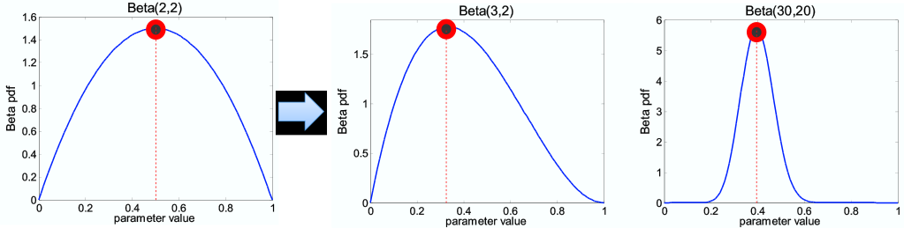

Advanced Machine Learning
10: Naive Bayes
Schedule
| # | date | topic | description |
|---|---|---|---|
| 1 | 22-Aug-2022 | Introduction | |
| 2 | 24-Aug-2022 | Foundations of learning | |
| 3 | 29-Aug-2022 | PAC learnability | |
| 4 | 31-Aug-2022 | Linear algebra (recap) | hw1 released |
| 05-Sep-2022 | Holiday | ||
| 5 | 07-Sep-2022 | Linear learning models | |
| 6 | 12-Sep-2022 | Principal Component Analysis | project ideas |
| 7 | 14-Sep-2022 | Curse of Dimensionality | hw1 due |
| 8 | 19-Sep-2022 | Bayesian Decision Theory | hw2 release |
| 9 | 21-Sep-2022 | Parameter estimation: MLE | |
| 10 | 26-Sep-2022 | Parameter estimation: MAP & NB | finalize teams |
| 11 | 28-Sep-2022 | Logistic Regression | |
| 12 | 03-Oct-2022 | Kernel Density Estimation | |
| 13 | 05-Oct-2022 | Support Vector Machines | hw3, hw2 due |
| 10-Oct-2022 | * Mid-point projects checkpoint | * | |
| 12-Oct-2022 | * Midterm: Semester Midpoint | exam | |
| 14 | 17-Oct-2022 | Matrix Factorization | |
| 15 | 19-Oct-2022 | Stochastic Gradient Descent |
| # | date | topic | description |
|---|---|---|---|
| 16 | 24-Oct-2022 | k-means clustering | |
| 17 | 26-Oct-2022 | Expectation Maximization | hw4, hw3 due |
| 18 | 31-Oct-2022 | Automatic Differentiation | |
| 19 | 02-Nov-2022 | Nonlinear embedding approaches | |
| 20 | 07-Nov-2022 | Model comparison I | |
| 21 | 09-Nov-2022 | Model comparison II | hw5, hw4 due |
| 22 | 14-Nov-2022 | Model Calibration | |
| 23 | 16-Nov-2022 | Convolutional Neural Networks | |
| 21-Nov-2022 | Fall break | ||
| 23-Nov-2022 | Fall break | ||
| 24 | 28-Nov-2022 | Word Embedding | hw5 due |
| 30-Nov-2022 | Presentation and exam prep day | ||
| 02-Dec-2022 | * Project Final Presentations | * | |
| 07-Dec-2022 | * Project Final Presentations | * | |
| 12-Dec-2022 | * Final Exam | * | |
| 15-Dec-2022 | Grades due |
Outline for the lecture
- MAP Estimation
- The Naive Bayes Classifier
MAP estimation
I suspect the coin is biased

What about the knowledge we already have?
We know the coin is “close” to 50-50. What can we do now?
Follow the Bayesian way ...
Rather than estimating a single $\theta$, obtain a distribution over possible values of $\theta$
Prior distribution
What kind of prior distribution do we want to use?- Represents expert knowledge (philosophical approach)
- Simple posterior form (engineering approach)
Uninformative priors:
- Uniform distribution
Conjugate priors:
- Closed-form representation of posterior
- $\prob{P}{\theta}$ and $\prob{P}{\theta|{\cal D}}$ have the same form
Bayes rule (revisited)

Bayes, Thomas (1763): An essay towards solving a problem in the doctrine of chances. Philosophical Transactions of the Royal Society of London, 53:370-418
Chain Rule & Bayes rule
Chain rule:
$\prob{P}{X,Y} = \prob{P}{X|Y}\prob{P}{Y} = \prob{P}{Y|X}\prob{P}{X}$
Bayes rule:
$\prob{P}{X|Y} = \frac{\prob{P}{Y|X}\prob{P}{X}}{\prob{P}{Y}}$
Bayes rule is important for reverse conditioning
Bayesian Learning
$ \prob{P}{\theta|{\cal D}} = \frac{\prob{P}{{\cal D}|\theta}\prob{P}{\theta}}{\prob{P}{\vec{{\cal D}}}} $
$ \prob{P}{\theta|{\cal D}} \propto \prob{P}{{\cal D}|\theta}\prob{P}{\theta} $
$ \mbox{posterior} \propto \mbox{likelihood}\times\mbox{prior} $
MLE vs. MAP
-
Maximum Likelihood estimation (MLE)
Choose value that maximizes the probability of observed data
$ \hat{\theta}_{MLE} = \underset{\theta}{\argmax} \prob{P}{{\cal D}|\theta} $ -
Maximum a posteriori (MAP) estimation Choose value that is most probable given observed data and prior belief \begin{align} \hat{\theta}_{MAP} & = \underset{\theta}{\argmax} \prob{P}{\theta|{\cal D}}\\ & = \underset{\theta}{\argmax} \prob{P}{{\cal D}|\theta}\prob{P}{\theta} \end{align}
MAP for Binomial distribution
Coin flip problem: Binomial likelihood
$\prob{P}{{\cal D}|\theta} = {n \choose \alpha_H} \theta^{\alpha_H} (1-\theta)^{\alpha_T}$
If the prior is Beta distribution,
\begin{align} \prob{P}{\theta} &= \frac{1}{\prob{B}{\beta_H,\beta_T}} \theta^{\beta_H-1}(1-\theta)^{\beta_T-1} \sim \prob{Beta}{\beta_H,\beta_T}\\ \prob{B}{x,y} &= \int_0^1 t^{x-1}(1-t)^{y-1}dt = \frac{\Gamma(x)\Gamma(y)}{\Gamma(x+y)} \end{align}
posterior is Beta distribution
MAP for Binomial distribution
Binomial likelihood
$\prob{P}{{\cal D}|\theta} = {n \choose \alpha_H} \theta^{\alpha_H} (1-\theta)^{\alpha_T}$
Beta prior
$ \prob{P}{\theta} \sim \prob{Beta}{\beta_H,\beta_T} $
Beta posterior
$\prob{P}{\theta|{\cal D}} = \prob{Beta}{\beta_H+\alpha_H, \beta_T + \alpha_T}$
$\prob{P}{\theta}$ and $\prob{P}{\theta|{\cal D}}$ have the same form: Conjugate prior
$\hat{\theta}_{MAP} = \frac{\alpha_H+\beta_H -1}{\alpha_H + \beta_H + \alpha_T + \beta_T -2}$
Beta distribution
More concentrated as values of $\alpha, \beta$ increase
Beta conjugate prior

$n = \alpha_H + \alpha_T$ increases $\rightarrow$
$n = \alpha_H + \alpha_T$ increases $\rightarrow$
As we get more samples, effect of prior “washes out”
Multinomial distribution
Example: Dice roll problem (6 outcomes instead of 2)
-
Likelihood is $\sim \prob{Multinomial}{\theta=\{\theta_1,\theta_2,\dots,\theta_k\}}$
$ \prob{P}{{\cal D}|\theta} = \theta^{\alpha_1}_1\theta^{\alpha_2}_2,\dots,\theta^{\alpha_k}_k $
-
If prior is the Dirichlet distribution:
$ \prob{P}{\theta} = \frac{\prod_{i=1}^k\theta_i^{\beta_i-1}}{\prob{B}{\beta_1, \beta_2, \dots, \beta_k}} $
-
the posterior is the Dirichlet distribution:
\[ \prob{P}{\theta|{\cal D}} = \prob{Dirichlet}{\beta_1+\alpha_1, \dots, \beta_k+\alpha_k} \]
Bayes rule (practice again)
Fruits in boxes (homework)

AIDS test
Data
- Approximately 0.1% are infected
- Test detects all infections (no false negatives)
- Test reports positive for 1% of healthy
- $+$ - tested positively
- $\prob{P}{AIDS} = 0.001$
- $\prob{P}{\overline{AIDS}} = 0.999$
- $\prob{P}{+|AIDS} = 1$
- $\prob{P}{+|\overline{AIDS}} = 0.01$
- $\prob{P}{AIDS|+} \approx 9\%$
Improve the diagnosis
Use a follow-up test!
- Test 2 reports positive for 90% of infected
- Test 2 reports positive for 5% of healthy people
- $+_1, +_2$ - tested positively
- $\prob{P}{AIDS} = 0.001$
- $\prob{P}{\overline{AIDS}} = 0.999$
- $\prob{P}{+_1,+_2|AIDS}$
- $\prob{P}{+_1, +_2|\overline{AIDS}}$
- $\prob{P}{AIDS|+_1, +_2} \approx 64%\%$
- Outcomes are not independent but test 1 and 2 are conditionally independent $\prob{P}{t_1,t_2|a} = \prob{P}{t_1|a} \prob{P}{t_2|a}$
The Naïve Bayes Classifier
Detector for spam filtering
- date
- time
- recipient path
- IP number
- sender
- encoding
- many more features
The Naïve Bayes Assumptions
Features $X_i$ and $X_j$ are conditionally independent given the class label $Y$
$\prob{P}{X_i,X_j|Y} = \prob{P}{X_i|Y}\prob{P}{X_j|Y}$
$\prob{P}{X_1,\dots, X_d|Y} = \prod_{i=1}^d \prob{P}{X_i|Y}$
How many parameters to estimate?$\mathbf{X}$ is a binary vector where each position encodes presence or absence of a feature. $\mathbf{Y}$ has K classes.
$(2^d - 1)K$ vs. $(2-1)dK$
The Naïve Bayes Classifier
Given:
- Class prior $\prob{P}{Y}$
- $d$ conditionally independent features $X_1, X_2, \dots, X_d$ given the class label $Y$
- For each $X_i$, we have the conditional likelihood $\prob{P}{X_i|Y}$
Decision rule: \begin{align} f_{NB}(\vec{x}) &= \underset{y}{\argmax} \prob{P}{x_1,\dots,x_d|y}\prob{P}{y} \\ &= \underset{y}{\argmax} \prod_{i=1}^d \prob{P}{x_i|y}\prob{P}{y}\\ \end{align}
The Naïve Bayes for discrete features
Training data: $\{(\vec{x}^j,y^j)\}_{j=1}^n \vec{x}^j = (x_1^j, \dots, x_d^j)$$n$ d-dimensional features plus class labels
$f_{NB}(\vec{x}) = \underset{y}{\argmax} \prod_{i=1}^d \prob{P}{x_i|y}\prob{P}{y}$
Estimate probabilities with relative frequencies!
- For class prior $\prob{P}{y} = \frac{\{\#j:y^j = y\}}{n}$
- For likelihood $\frac{\prob{P}{x_i,y}}{\prob{P}{y}} = \frac{\{\#j:\vec{x}_i^j = x_i, y^j=y\}/n}{\{\#j:y^j = y\}/n}$
Text Classification
- Ex1. Classify e-mails: $y \in \{ \mbox{Spam}, \mbox{NotSpam} \}$
- Ex2. Classify articles into topics
- What are the features of $\mathbf{X}$?
- Full text!
Text Classification: naïvely
- Fix max_len of an article and encode positions $\mathbf{X} = \{X_1, \dots, X_{1000}\}$
- $X_i$ is a word at $i^{th}$ position. $X_i \in \{0, \dots, D\}$, where $D$ is the size of the vocabulary (say 50,000 words).
- $\prob{P}{\mathbf{X}|Y}$ is large
- Need to estimate $K D^{1000} = K 50000^{1000}$ parameters
Naive Bayes to the rescue!
- $\prob{P}{X_i^j|y}$ probability of word $j$ at position $i$ for class $y$
- Need to estimate $DK1000 = 50000K1000$ parameters
Text Classification: bag of words
Word order and positions do not matter! Only presence
- $D=2 \implies$ $X_i$ is binary again
- $\mathbf{X}$ is vocabulary-length (say 50000) binary vector.
- Need to estimate $DK50000 = 50000K$ parameters
Works really well in practice!
Insufficient training data
- What if you never see $x_i = v$ for $y = k$?
-
No word "Luxury", when $y = \mbox{NoSpam}$ in the dataset
$\prob{P}{\mbox{Luxury} = 1, \mbox{NoSpam}} = 0 \implies \prob{P}{\mbox{Luxury} = 1| \mbox{NoSpam}} = 0$
- $\prob{P}{\mbox{Luxury}=1, X_2, \dots, X_n| Y} = $
- $\prob{P}{\mbox{Luxury}=1| Y} \prod_{i=2}^n \prob{P}{X_i|Y} =$
- $0$
- Now what?
The Naïve Bayes Properties
- The counts seemed confusing but it is just a consequence of our choice of the likelihood and prior
- Conveniently estimated everything relative to individual points
- Need to watch out for empty label-feature combinations in the data
- Need to evaluate log probabilities, as products of small numbers lead to problems
What if the features are continuous?
Character recognition: $\vec{x}_{ij}$ is intensity at pixel $(i,j)$
Gaussian Naïve Bayes
$\prob{P}{X_i = \vec{x}_i|Y = y_k} = \frac{1}{\sigma_{ik}\sqrt{2\pi}} e^{-\frac{(\vec{x}_i - \mu_{ik})^2}{2\sigma_{ik^2}}}$Different mean and variance for each class $k$ and each pixel $i$.$^*$
Example: classifying mental states
- resolution around $1^3$ mm
- 1 image per 2 seconds
- about $15,000$ voxels per "frame"
- non-invasive and safe
- measures Blood Oxygenation Level Dependent (BOLD) response